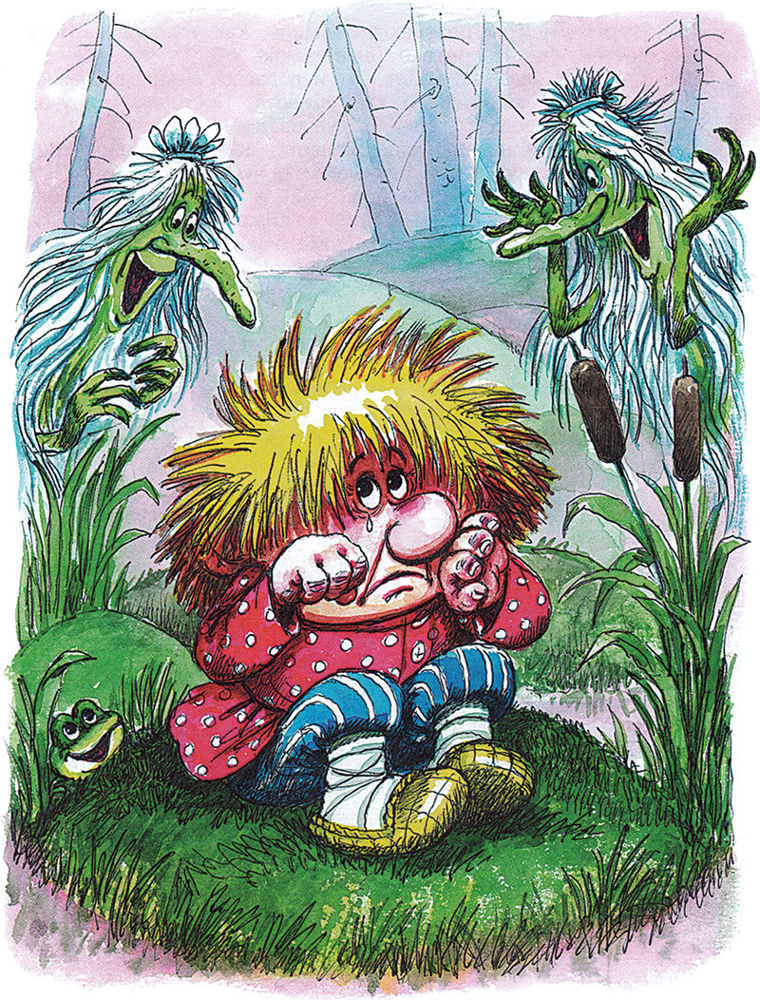
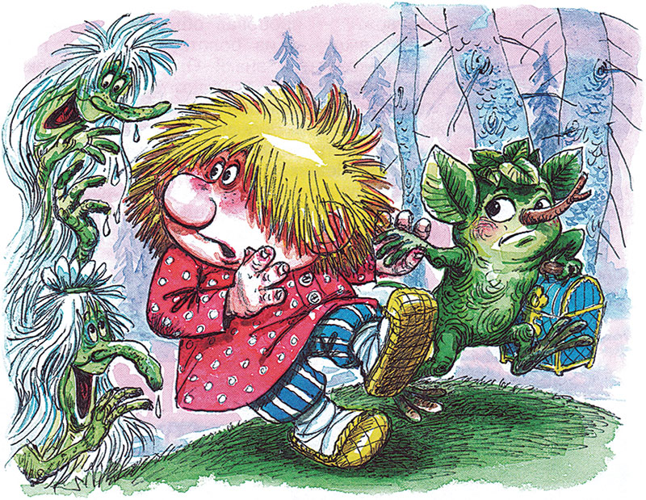

Домовёнок Кузя - продолжение -11.
Татьяна Александрова25. Побег
Маленький лешонок торопится. Надо бежать! А Кузька сидит за столом, ест ватрушки. Лешик и так и сяк старается увести друга. Нет, сидит сиднем.
— В гостях хорошо, а дома лучше. Гость гости, а погостил, прости! — вдруг сказала печка. Кузька от удивления ватрушкой подавился.
— Пора и честь знать, — говорит печка. Лешик — к печке, схватил сундучок, а сундучок опять сверкает цветами и звездами. Лешик не стал разбирать, кто говорит такие слова, протягивает сундучок домовенку:
— На!
— Дай! Дай! — Кузька тянется к сундучку, а встать лень.
Чудеса! Кочерга шагнула от печи, толкает домовенка к выходу, ухваты подпихивают. Веник выскочил из угла, подхлестывает сзади. Кузька спасается от веника, кое-как перевалил через порог.

Дом сам выпроводил домовенка, пожалел его. Куда бежать? Злое эхо и мост и корыто охраняет. Один путь — через черное болото. Лешик про это болото слыхать слыхал, а бывать в нем не бывал. Там жили болотные кикиморы, глупые, бестолковые. Дед Диадох про них говорил: свяжись с дураками, сам дураком станешь.
Лешик пятится к болоту, манит сундучком Кузьку:
— На! На!
Домовенок путается в лаптях, ножки подгибаются:
— Дай! Дай!
Ползет, как улиточка.

Кое-как доползли до леса. Хоть болотный, а все-таки лес. Чахлый, дряблый, дряхлый. Все деревья врозь, будто в ссоре, и все кривули. Только елки выстроились в ряд, высокие, прямые, как сторожа при болоте. Деревья обрадовались Лешику, елки лапами замахали: сюда, сюда!
Лешик спрятал друга поглубже под елку, сундучок там оставил, побежал искать тропу через болото. Одни лешие эту тропу и нашли бы. Даже Лешику здесь жутко. Сойдешь с тропы — засосет трясина.
А со стороны круглой поляны шум, крик. Это Баба Яга вернулась, а в Доме для хорошего настроения ни Кузьки, ни Лешика, ни сундучка. Накинулась на Кота:
— Куда побежали?

Толстый Кот улегся на самую мягкую подушку, улыбается в усы, мурлычет потихоньку и показывает в другую сторону. Туда, мол, убежали по розовому ковру, по золоченому мосту, в лесную чащобу, в лешачью берлогу. Куда еще? Рад, что нет в доме домовенка, убежал, и ладно. А то явился гость незваный-непрошеный и стал хозяином. Кому приятно?
Баба Яга — на мост. Ругает Злое эхо почем зря: зачем ее, Ягу. не позвало? Яга кричит. Злое эхо молчит. Шум стоит, деревья гнутся. Лешик уши заткнул. Кузька из-под елки высунулся, глаза вытаращил. Испугался. Понял, какова Баба Яга.
Лешик с Кузькой улепетывают в одну сторону, через Черное болото, а Баба Яга — в другую, через лес. Дятел летит перед пей, то сучок сломит, то сухой листок потеребит, заманивает Ягу подальше от Кузьки с Лешиком. Баба Яга туда-сюда мечется, с ног сбилась, руки протягивает, но вместо беглецов то трухлявый пень обнимет, то колючую елку сцапает. Птицы на Ягу кричат, кусты за подол хватают, сухие листья запутались в волосах.
Баба Яга чуть не плачет. Кокошник потеряла. Сарафан в клочья, Села отдохнуть, а молодая ворона рада-радехонька: уселась на ее косматую голову — готовое гнездо, тут и выведу воронят. — И что мне пешей-то вздумалось ходить? — ворчит Яга. — Или мне летать не на чем? Всегда то на метле, то в ступе, то в корыте, а тут по дремучему лесу без дороги! Старый леший, что ли, проснулся, водит по лесу?
Проплутала до ночи. Уже и не беглецов ищет, а обратную дорогу. Хорошо, повстречался старый Филин, вывел к Мутной речке, к кривому стволу. Ствол дрожит, Баба Яга кричит:
— Ой, батюшки, упаду! Ой, матушки, утону! Чуть живая к рассвету добралась Яга до своего Дома для плохого настроения, повалилась на печь и уснула как убитая. Проснулась, съела горшок каши:
— Ну, сейчас полечу, отыщу, отомщу, отплачу-у-у! Сундук отниму-у!

А лететь-то и не на чем. Ступа да метла в пряничном доме. Села в корыто, доплыла до золоченого моста, и тут ее настроение улучшилось. В дом вошла в превосходном настроении: стол накрыт, самовар кипит, толстый Кот ждет хозяйку, мурлыкает.
Напилась Яга, наелась, говорит Коту:
— Ох, и сон мне снился в том доме. Сейчас расскажу. Про домовых, что ли? Или про кикимор? Уж и не вспомню. Ну, ничего, слетаю в тот дом, сразу все вспомню!
26. Кикиморы болотные
Маленький домовенок с маленьким лешонком пробирались через болото. Кузька споткнулся о кочку:
— Ой, как я устал! Ой, не могу!
— Тише, — зашептал Лешик. — А то услышат.
— Злое эхо? — испугался Кузька. — Что ты? — ответил Лешик. — В Черном болоте даже Злое эхо глохнет. Кикиморы болотные услышат, они тут хозяйки.
«Ох-ох! — думал Кузька. — И пожар, и темный лес, и Баба Яга, а теперь еще какие-то страшные кикиморы. Их еще не хватало. Ох-ох!»
Весь день хлюпала под ногами друзей черная болотная жижа. Кузька с трудом вытаскивал из нее свои лапти. Чем дольше глядел Кузька на болото, тем меньше оно ему нравилось. «Никогда ни в какое болото ни ногой! — размышлял он. — Пусть просит кто хочет, уговаривает… Все равно не пойду, с места не тронусь».
Лешик легко бежал даже по болотной тропе. Возвращался, поднимал упавшего Кузьку и опять с сундучком в лапках убегал вперед. Посмотреть, скоро ли кончится болото.
Кузька опять споткнулся о кочку. Лежит и жалеет себя. Сейчас за ним вернется Лешик, и снова тащись по болоту.
Тихо колышется осока. Тихо поднимается туман. Неслышно летают в небе какие-то птицы. А рядом жижа, блестящая, черная, на ней зеленые моховые кочки. На некоторых кочках деревца трясутся, будто в лихорадке. Затрясешься тут! — Ох-ох! Грязный я, как поросенок! — заохал Кузька. — Это свинячьим детям хорошо по грязи елозить. Ох-ох! Бедненький я, несчастненький.

И тут рядом с ним послышалось:
— Ах-ах! Миленький он, прекрасненький!
Домовенок увидел перед собой серые головки среди осоки. Высунутся, пропадут, опять высунутся. Кикиморы болотные, что ли? И совсем не страшные. Зря Лешик пугал.
— Вот беда-беда-огорчение! — пожаловался кикиморам Кузька.
— Вот вода-вода-обмочение! Вот еда-еда-угощение! — подхватили веселые голоса.
— Устали мои резвы ноженьки, — вздохнул Кузька.
— Оторвали ему ноженьки, разбросали по дороженьке! — обрадовались кикиморы. — Ух-ух! Весь распух! Глазки окривели, комары заели! И-и-и!
— Перестаньте сей же час! — закричал на них Кузька. — Перестаньте дразниться, вам говорят! — И махнул рукой.
Что одна, то и другие — так всегда делают кикиморы. Одна чихнет, закряхтит или заскрипит, тут же все остальные хором: «Пчхи! Кхи! Скрип-скрип!» Если у одной кикиморы на обед сушеные комары, то и другие в этот день сушеной мухи не попробуют.
Кикиморы тоже замахали руками, да не пустыми, каждая зачерпнула болотной грязи. Скачут вокруг Кузьки. Тощие, длинные, плоские, корявые. Головы с кулачок, то лысые, то лохматые, серые, зеленоватые, один глаз на лбу, другого не видать. Нога всего одна, больше в болоте не надо, а то одну вытянешь, другая увязнет. Зато рук по три, по пять, а у старшей кикиморы и не поймешь сколько. Машут руками. Рты разевают. большие, как у лягушек. Ногу из трясины вытянут и прыгают: шлеп-чмок!
Через болото мало кто ходит, вот и попалось им развлечение.
А Лешик уже добежал до края болота. Поставил сундучок под березу, что росла с краю. Вдруг сзади писк, визг! Лешик взял сундучок и назад. Глядь, валяется Кузька поперек тропы, а кикиморы тянут его в разные стороны.

— Здравствуйте, кикиморы болотные! — поклонился Лешик.
Кикиморы отпустили Кузьку, долго кивали и кланялись, а потом внимательно глядели, как Лешик очищает Кузьку от грязи. Но не успели друзья пробежать несколько шагов, как кикиморы закричали: «Салочки! Салочки!» — схватили их и верещат: «Поймали! Поймали!»
— Что вы, кикиморы болотные! Отпустите нас, пожалуйста! Нас ждут. Нам пора, — уговаривал их Лешик, подталкивая друга к выходу из болота.

— Пора! Не пора! — обрадовались кикиморы, загородив тропу, и запрыгали с нее в болото. — Пора! Нет, не пора! Не подглядывайте, ишь, хитренькие! Вот теперь пора! — и скрылись из глаз.
Кузька и думать забыл, что разучился бегать, так припустил по тропе. Вот уже береза впереди, верхушки леса виднеются. Ура!
— Уря-ря-ря! — завопили кикиморы, одна за другой выскакивая на тропу и загораживая проход.
С тропы не сойдешь — засосет черная трясина. А кикиморы дразнятся:
— Неотвожа, красна рожа! Неотвожа, зелена рожа!
— Какие ж мы неотвожи! — пробовал объяснить Кузька. — Мы ведь не играем. Вот вылезем из болота, отмоемся, тогда и поиграем. Знаете, сколько игр я знаю! Отнесем сундучок и вернемся. Вот этот, — и показал на сундучок в лапе у Лешика — Да вы что, спятили? — завопил Кузька и бросился к большущей кикиморе, пытаясь отнять у нее сундучок.
Самая старшая кикимора, у которой не поймешь, сколько рук, выхватила сундучок у Лешика, быстренько передала его подружкам. Пошел, пошел сундучок из рук в руки, исчез в болоте вместе с кикиморами. Только его и видели.

— Отдайте! — кричал Кузька, — Он же у моего дедушки хранился. И еще у дедушкиного прадедушки. А вы его — в болото!
Продолжение следует